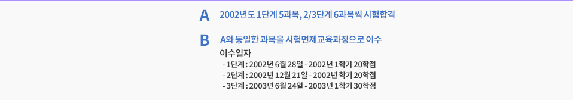

제도연계 및 활용
국가기술자격시험 응시자격 부여
1. 자격증 취득
[국가기술자격법시행령] 제11조에 따라 아래의 표와 같이 학점은행제를 통해 일정한 학점을 인정받은 학습자에게 국가기술자격 응시자격 부여됩니다.
- 주의사항
1) 학점을 취득하였다 할지라도 학점인정을 받지 않았다면 해당 학점임을 증명하는 학점인정증명서를 발급받을 수없으므로, 반드시 필기시험 응시 전 학습자등록 및 학점인정신청을 해야 하며, 학습자등록 및 학점인정신청은분기별(1, 4, 7, 10월) 접수가 가능합니다.
2005년 2회 국가기술자격 검정부터 자격 필기 시험일을 기점으로 학점인정 등에 관한 법률에 의거 응시자격이 되는 지 여부를 산업인력공단 측에서 엄격히 판단할 예정이오니 자격응시를 희망하는 학습자의 경우 필기시험응시 전 반드시 학점인정 신청을 해야 합니다.
2) 자격증 시험과목, 일정, 발급방식 등 국가기술자격에 관련된 세부내용은 주관기관인 한국산업인력공단 (02-3271-9190 ~ 1, http://www.hrdkorea.or.kr )에 문의하면 안내를 받을 수 있습니다.
▶ 기술·기능분야 : 「국가기술자격법시행령 제10 조 제②항의 별표 1의 2」에 따라 아래의 표와 같이 학점은행제를 통해 일정한 학점 을 인정받은 학습자에게 국가기술자격의 응시자격이 부여됩니다.
| 등급 | 응시자격 |
|---|---|
| 기사 | [학점인정 등에 관한 법률] 제8조의 규정에 의하여 대학졸업자와 동등 이상의 학력을 인정받은 자 또는 동법 제7조 규정에 의하여 106학점 이상을 인정받은 자를 대학졸업예정자로 간주하되, 인정받은 학점 중 고등교육법에 따른 대학 재학 중 취득한 학점 외의 학점이 반드시 18학점 이상 포함되어야 함. [학점인정 등에 관한 법률] 제8조의 규정에 의하여 전문대학 졸업 자와 동등 이상의 학력을 인정 받은 자로서 응시하고자 하는 종목이 속하는 동일 직무 분야에서 2년 이상 실무에 종사한자 |
| 산업기사 | [학점인정 등에 관한 법률] 제8조의 규정에 의하여 전문대학 졸업자와 동등 이상의 학력을 인정받은 자 또는 동법 제7조의 규정에 의하여 41학점 이상을 인정 받은 자 |
2. 사법고시 또는 AICPA 응시기회 부여
사법시험법동법시행령, 시행규칙에 따라 2006년 1월 1일부터 사법고시에 응시하기 위해서는 법학관련 과목을 35학점이상 대학 또는 학점은행제를 통해 이수해야 합니다.
AICPA의 경우 각 주별로 경영 또는 회계과목을 일정 학점 이상 이수해야 합니다.
독학학위제 학위 취득시험 응시자격 부여 및 시험면제 교육과정
독학학위제(독학에 의한 학위취득제도)
[독학에 의한 학위취득에 관한 법률]에 따라 국가평생교육진흥원 독학학위검정센터에서 실시하는 시험에 합격한 사람에게 대학에서 수여하는 학위와 법적으로 동등한 효력을 지니는 학위를 수여하는 제도입니다.
시험은 1단계부터 4단계로 나뉘어 있고, 마지막 종합시험(4단계)은 반드시 시험을 통해 합격해야 합니다.
1-3단계는 시헙합격 또는 일정한 교육과정을 이수했을 때 시험을 면제받을 수 있도록 되어 있습니다.
학점은행제에는 독학사의 각 단계별 시험(교양과정-전공기초과정-전공심화과정-학위취득종합시험)합격 또는 면제 교육과정에 이수에 대하여 규정에 따라 학점이 인정됩니다.
1. 사법고시 또는 AICPA 응시기회 부여
독학학위제 시험합격 혹은 시험면제 교육과정으로 인정받을 수 있는 학점은 다음과 같습니다.
| 1단계 | 교양과정인정시험 합격 및 면제과정 이수 | 과목당 4학점 (단계별 최대 20학점까지) |
|---|---|---|
| 2단계 | 전공기초과정인정시험 합격 및 면제과정 이수 | 과목당 5학점 (단계별 최대 30학점까지) |
| 3단계 | 전공심화과정인정시험 합격 및 면제과정 이수 | 과목당 5학점 (단계별 최대 30학점까지) |
| 4단계 | 전공기초과정인정시험 합격 및 면제과정 이수 | 과목당 5학점 (단계별 최대 30학점까지) |
※ 4단계 시험합격과목이 1~3단계에서 면제교육과정이수 또는 시험합격한 과목과 중복될 경우 이 중 하나만 선택하여 학점인정 가능
2. 독학학위제에 대한 자세한 정보 확인 방법
평생교육진흥원→국가평생교육진흥원 독학사 관리실 (https://bdes.nile.or.kr:444/nile/base/bdesMain.do) 독학사제도를 운영하고 있으므로 시험일정, 응시요건, 시험과목 등 제도전반에 대학 자세한 안내는 이곳을 통해 받을 수 있으며, 국가평생교육진흥원 홈페이지 하단 [관련링크]에서 [독학학위검정센터]을 클릭하시면 해당홈페이지가 검색됩니다.
- 주의사항
1) 중복되는 시험과목 또는 면제교육과정 이수에 대해서는 하나만 선택해 학점인정을 받을 수 있습니다.
(자세한 사항은 홈페이지 [학점인정주의사항]참조)
2) 시험합격이 아닌 시험면제교육과정의 학점은 연간 및 학기당 이수제한 학점. 1개 교육훈련기관 최대 이수제한 학점의 범위에 포함됩니다. (자세한 사항은 국가평생교육진흥원 홈페이지 [학점인정주의사항] 참조)
3) 독학에 의한 학위취득시험에 응시하기 위해서는 총 인정학점 외에도 동일전공 여부, 동일전공 인정학점 등의 요건에 모두 충족되어야 합니다. 특히 독학학위제의 전공과 학점은행제 전공명이 완전히 일치하지 않을 경우 별도의 심의를 거쳐서 응시자격이 주어질 수 있으므로 독학학위검정센터에 자세한 사항을 문의해야 합니다.
예시

"A와B의 인정학점은?"
| 시험합격(A의 경우) | 시험면제교육과정 이수(B의 경우) |
|---|---|
| 1단계 : 4 × 5 = 20학점 2단계 : 5 × 6 = 30학점 3단계 : 5 × 6 = 30학점 총 80학점 인정 |
1단계 : 4 × 5 = 20학점 2단계 : 5 × 4 = 20학점(학기당 24학점까지) 3단계 : 5 × 4 = 20학점(학기당 24학점까지) 총 60학점 인정(2, 3단계는 학습자가 과목 선택) |
| 시험합격은 연간/학기당 이수 학점제한에 관계없이 학점인정 | 시험면제교육과정은 연간/학기당 이수학점 제한에 포함되므로 이를 초과하는 학습과목은 학점인정 불가 |